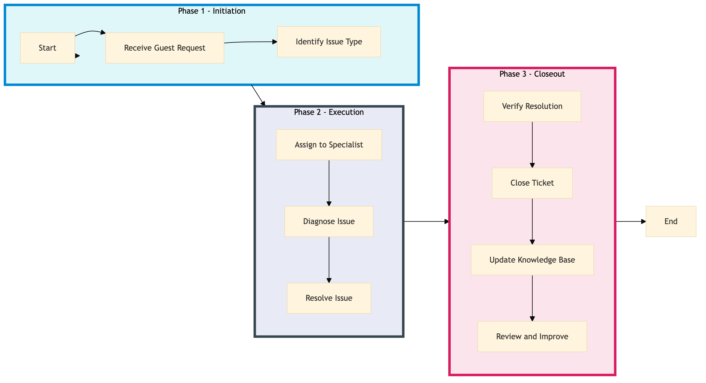

| Role | Steps |
|---|---|
| Front Desk Agent | 1.1 3.1 |
| IT Support Specialist | 1.2 2.1 2.2 2.3 3.2 |
| IT Support Manager | 2.1 3.3 3.4 |
| Step | Name | Role | System | Input | Output | KPI | Dec? | Exc? | Pain Point / Risk |
|---|---|---|---|---|---|---|---|---|---|
| 1.1 | Receive Guest Request | Front Desk Agent | Oracle OPERA Cloud | Guest request via phone, email, or in-person | Logged ticket in Oracle OPERA Cloud | Less than 2 minutes | N | Y | Handling multiple requests simultaneously |
| 1.2 | Identify Issue Type | IT Support Specialist | Oracle OPERA Cloud | Logged ticket in Oracle OPERA Cloud | Issue categorization (e.g., Wi-Fi, room technology) | Less than 1 minute | N | Y | Accurate issue identification |
| 2.1 | Assign to Specialist | IT Support Manager | Oracle OPERA Cloud | Categorized ticket | Assigned ticket to appropriate specialist | Less than 1 minute | N | Y | Resource allocation |
| 2.2 | Diagnose Issue | IT Support Specialist | Oracle OPERA Cloud, SynXis CRS | Assigned ticket | Diagnosis report | Less than 5 minutes | Y | Y | Complex issue resolution |
| 2.3 | Resolve Issue | IT Support Specialist | Oracle OPERA Cloud, SynXis CRS | Diagnosis report | Resolved ticket | Less than 10 minutes | N | Y | Technical complexity |
| 3.1 | Verify Resolution | Front Desk Agent | Oracle OPERA Cloud | Resolved ticket | Verification of guest satisfaction | Less than 2 minutes | N | Y | Guest feedback |
| 3.2 | Close Ticket | IT Support Specialist | Oracle OPERA Cloud | Verification of guest satisfaction | Closed ticket in Oracle OPERA Cloud | Less than 1 minute | N | Y | Ticket closure process |
| 3.3 | Update Knowledge Base | IT Support Manager | Knowcross HotSOS | Resolved ticket details | Updated knowledge base article | Less than 10 minutes | Y | Y | Knowledge base maintenance |
| 3.4 | Review and Improve | IT Support Manager | Oracle OPERA Cloud, Knowcross HotSOS | Closed ticket details | Improvement plan or action items | Less than 15 minutes | Y | Y | Continuous improvement |
This process outlines the steps involved in providing guest technology support at a full-service Marriott hotel using Oracle OPERA Cloud PMS and other key systems.